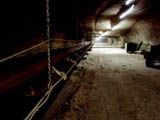

|
|
|
|
|
|
Quiz Format |
|
|
|
|
|  | Directions: Read the statements and choose the most appropriate response. You may click the helpful hints button at any time. Good luck! |
1. Base and precious minerals that have been mined in Saskatchewan include all but one of the following choices. Choose the exception.
a. gold and nickel
b. zinc and lead
c. aluminum
d. platinum
2. Base minerals and one type of energy mineral may be found in the ***area of the province .
a. northern
b. southern
c. central
d. southeast
3. Gold is most likely to be found in a greenstone belt which is composed of ***.
a. igneous rock
b. metamorphic rock
c. sandstone
d. sedimentary rock
4. Much of the shale in Saskatchewan releases light liquids or gases. One of these products released, namely ***,is used in making asphalt.
a. residual fuel oil
b. propane
c. natural gas
d. crude oil
5. The main source of our domestic electricity in Saskatchewan is from ***.
a. hydropower of the Rafferty-Alemeda Dam
b. thermal electric generating stations powered by coal
c. natural gas
d. solar and wind energy
6. The non-stick coatings on pots and frying pans are possible because of the mining of ***.
a. crude oil
b. bentonite
c. uranium
d. copper
7. Radiation has many applications including ***.
a. controlling insects in the field of agriculture
b. the production of electricity from a very small amount of fuel
c. the prevention of fires in the home and office
d. a) and c) only
8. Crushing and grinding, drying and crystallization are all steps in the processing of ***.
a. kaolin
b. uranium
c. potassium chloride
d. diamond
9. Golfers most likely do not enjoy the presence of this mineral on the course. The mineral in question is produced as a result of the weathering of igneous and metamorphic rock formations and currently mined from the ***.
a. Red Deer River
b. Estevan area
c. Great Sand Hills
d. Truax area
10. A mineral mined in Saskatchewan which can be used because of its impermeability to line refuge sites is ***.
a. chlorite clay
b. sodium sulphate
c. bentonite
d. silica sand